Boss Strategies(NOTE! We have completed up to the later bosses!!)
Advanced Tactics
Sand Scorpion
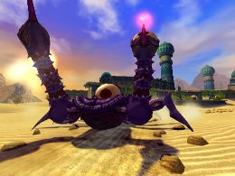
A scorpion boss that appears in Sand Oasis.
If you run up to the Sand Scorpion, it will attack you with its tail. You can inflict damage by launching a Homing Attack on the eye on its tail, then work your way up to the eye on its back. If you’re not quick enough it will begin dropping missiles on you, so try to make your approach quickly without losing speed.
The Sand Scorpion also has a stabbing attack that doesn’t give you a big opening, but if you use Time Break you can do a Homing Attack on the eye on its tail. If you have extra energy in the Soul Gauge, this tactic can be useful.
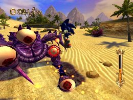
When you do enough damage to the eye on its back, the second phase begins. The Sand Scorpion will attack with its huge fangs, so evade it and counterattack when the jaws are on their way back. The jaws return fairly quickly, so you can damage the boss more easily if you have a Turbo Jump-type skill equipped. If it still seems difficult, you can use Time Break to make it easier. Not too many Pearls appear in the mission, however, so you will need to plan carefully.
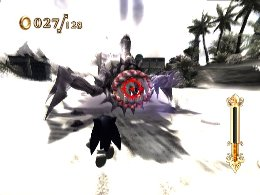
Captain Bemoth
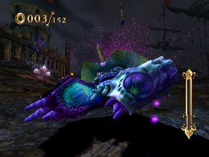
The combined form of the Slime DjinnEnemies that appear in Pirate Storm.
When you get close enough to Captain Bemoth, you can jump and do a Homing Attack on the captain’s horns. If the Homing Attack succeeds, Sonic will grab onto a horn. You can then waggle the Wii Remote to pull it out. While you’re pulling out the horn, Captain Bemoth will build up an electric charge, so if a lightning attack comes your way press the 2 Button to let go of the horn and evade the attack.
After Sonic pulls out a horn, Captain Bemoth will face front and launch his tidal wave attack. The waves will go in the direction he swings his arms, so watch his movements carefully and evade his attacks. After two attacks to the left or right the third attack will always be a two-handed tidal wave, so it’s good to start a Charge Jump during his wind-up. If you have Aegis Slider equipped, you can use it to evade the tidal wave, so it’s a safer option for players who have trouble evading to the sides.
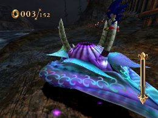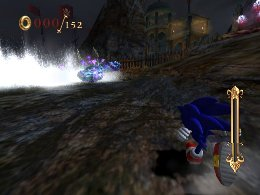
In addition, you can use Speed Break to charge the captain (except during tidal wave attacks and speed board jumps). If the Speed Break hits, the captain will be knocked unconscious, so it will be easier to do Homing Attacks on the horns.
Ifrit Golem
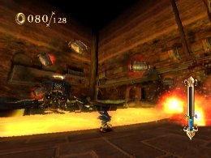
A robot-like boss that appears in Evil Foundry.
The point of view switches to a side view, and the controls may take some getting used to, but the basics are still the same. Start off by attacking the three weak points on the Ifrit’s fists.
Destroying the three points knocks the boss off balance, so launch Homing Attacks on the floating tanks to avoid the magma, and then work your way up his arm and back to his head, and do Homing Attacks on the weak point on the head.
You can then repeat these steps, but after you do a certain amount of damage, the Ifrit will sink into the magma and attack with gas tanks. When this happens, if you equip Slowed Search and use a Time Break, you can lock on to the thrown gas tanks. Doing Homing Attacks on the gas tanks will send them flying back at the Ifrit Golem for damage.
Also, using a Speed Break when the Ifrit is off balance allows you to run across the magma. Continue running to do damage to the Ifrit’s head.
You can use the two types of breaks to find the tactics that work best for you.
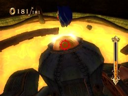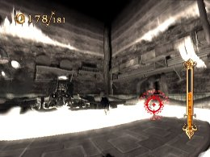
Erazor Djinn
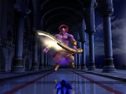
The boss of Night Palace, and the cause of all of the troubles in the worlds of the Arabian Nights.
He has a wide variety of weapon attacks, which don’t leave many openings for you to counterattack. There are some, though—avoid the Z and L-shaped slashes with a Charge Jump, and launch Homing Attacks.
After a while, a side-view battle begins. Once in this mode, you can launch Homing Attacks at the right timing to inflict large amounts of damage. Using Time Breaks will make these Homing Attacks much easier.
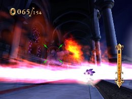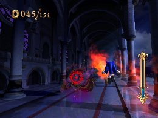
After you do a certain amount of damage to Erazor Djinn, there is a maximum of three pattern changes. As he enters a new phase, his attacks will become faster, and more difficult to avoid. But even with faster attacks, it should still be possible to avoid them if you recognize the attack patterns below.
The letters V, L, I and Z indicate weapon attack patterns, and “side view” indicates a transition to side view mode.
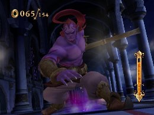
Phase 1
V --> I --> L --> I --> I --> side view --> I --> back to beginning
Phase 2
I --> L --> I --> V --> I --> Z --> I --> side view --> back to beginning
Phase 3
I --> V --> I --> Z --> I --> I --> V --> L --> V --> V --> Z --> side view --> back to beginning
Super Play
EVIL FOUNDRY
Defeat the Boss "Battle! Golem!"
Use Speed Brake to damage the weak point on the head for tactics.
« Enemy Strategies | Advanced Tactics | Wall Shuffle Techniques »
 RSS
RSS